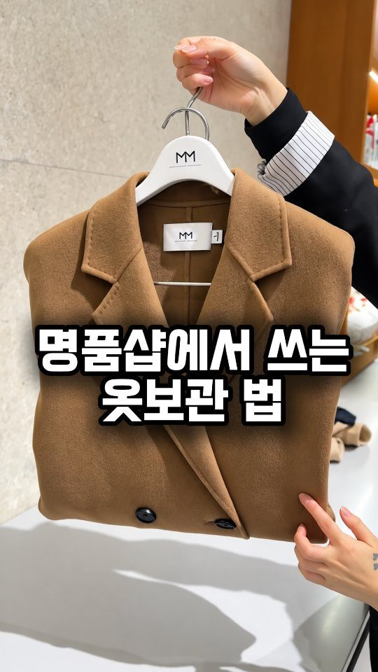

패션 · 릴스 · 2026-11-22
명품샵에서 쓰는 옷 보관법 3가지: 니트·바지·롱코트
니트는 소매를 접어 걸고, 바지는 다리를 교차해 걸고, 롱코트는 밑단을 접어 걸면 옷 모양을 망가뜨리지 않고 깔끔하게 보관할 수 있다.

- 옷걸이에 잘못 걸면 어깨가 늘어나고 옷 모양이 망가질 수 있다.
- 니트는 겨드랑이에 옷걸이를 대고 소매를 안쪽으로 넣어 걸면 어깨에 뿔이 생기지 않는다.
- 자꾸 흘러내리는 슬랙스와 청바지는 바지 다리를 양쪽에서 번갈아 교차해 걸면 흘러내리지 않는다.
- 바닥에 끌리는 롱코트는 밑단을 옷걸이에 걸친 뒤 안쪽으로 고리를 빼주면 깔끔하게 보관된다.
- 작은 보관 습관만으로 옷장이 깔끔해지고 옷을 오래 입을 수 있다.